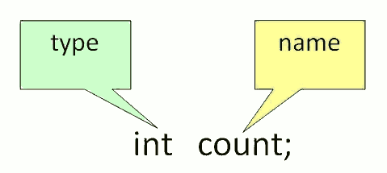
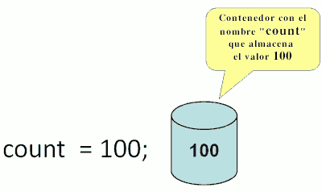
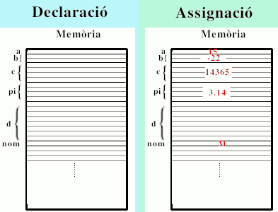
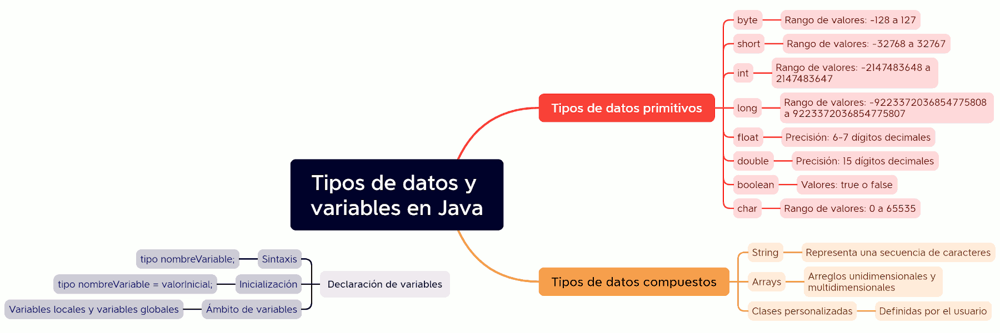

Variables
Una Variable es un contenedor de datos que almacena los valores de los datos durante la ejecución del programa Java. El valor de una variable puede cambiar durante la ejecución del programa. Cuando se necesite el valor de una variable basta con poner el nombre de la variable en una expresión. A cada variable se le asigna un tipo de datos que designa el tipo y la cantidad de valor que puede contener. La variable es un nombre de ubicación de memoria de los datos. Las variables Java tienen principalmente tres tipos: Local, Instancia y Estática.
Para utilizar una variable en un programa es necesario realizar 2 pasos
-
Declaración de variable
Una variable debe ser declarada antes de poderla usar y solo puede declararse una única vez. Para declarar una variable, debe especificar el tipo de datos y darle a la variable un nombre único.

Ejemplos de declaraciones válidas son:
byte a;
short b;
int c;
float pi;
double d;
char nom;
boolean isnumero, isletra, isdigito; // declaración múltiple
Una vez que se declara un tipo de datos para una variable, el compilador monitoreará su uso de ese elemento de datos. Si intenta realizar operaciones que no están permitidas para ese tipo o que no son compatibles con ese tipo, el compilador generará un error. Debido a que el compilador de Java monitorea las operaciones en cada elemento de datos, a Java se le llama lenguaje fuertemente tipado.
-
Inicialización de una variable
Para inicializar una variable, debe asignarle un valor válido. Ejemplos de inicializaciones válidas son:
a = 15;
b =-22;
c = 14365;
pi = 3.14;
nom = "M";
Se puede combinar declaración e inicialización de variables. Ejemplo:
byte a=2,b=4,c=6;
float pi=3.14f;
char a=’M’;

-
Tipos de variables
- Variables locales: se declaran dentro de un método o bloque y solo son accesibles dentro de ese método o bloque.
public class VariableTest {
public static void main(String[] args) {
int myInt = - 5; // entero
float myFloat = 2.718281828459045f; // real - punto flotante
char myLetter = 'a'; // caracter
boolean myBool; // boolean
String myText = "Hero"; // String
System.out.println(myInt + " " +
myFloat +" " + myLetter + " " + myBool + " " + myText);
Student myStudent = new Student("Walker","Johnny", "Kyle", null);
}
}-
class Guru99 {
static int a = 1; //static variable
int data = 99; //instance variable
void method() {
int b = 90; //local variable
}
} - Variables estáticas (variables de clase): se inicializan sólo una vez, al inicio de la ejecución del programa. Estas variables deben inicializarse primero, antes de la inicialización de cualquier variable de instancia. Se definen igual que las variables de instancia pero su valor es común para todas las instancias de una clase. Se declaran con la palabra clave static.
- Variables de instancia: se definen sin la palabra clave static. Se definen fuera de una declaración de método pero dentro de una clase. Son específicas del objeto, es decir, se crean cuando se crea un objeto y son propias de ese objeto. Cada objeto tendrá sus propias variables de instancia (atributos).
Ejemplo:
A continuación se muestra un programa completo con declaración de variables y asignación de un literal como valor inicial a cada variable.
/* Variables Class. Anderson, Franceschi */
public class Variables
{
public static void main( String [ ] args )
{ // This example shows how to declare and initialize variables
int testGrade = 100;
long cityPopulation = 425612340L;
byte ageInYears = 19;
float salesTax = .05F;
double interestRate = 0.725;
double avogadroNumber = +6.022E23;
// avogadroNumber está representado en notación científica
// su valor es 6.022 x 10 elevado a 23
char finalGrade = ‘A’;
boolean isEmpty = true;
System.out.println( “testGrade is “ + testGrade );
System.out.println( “cityPopulation is “ + cityPopulation );
System.out.println( “ageInYears is “ + ageInYears );
System.out.println( “salesTax is “ + salesTax );
System.out.println( “interestRate is “ + interestRate );
System.out.println( “avogadroNumber is “ + avogadroNumber );
System.out.println( “finalGrade is “ + finalGrade );
System.out.println( “isEmpty is “ + isEmpty );
}
}

Convenciones de nomenclatura
A la hora de dar nombre a los identificadores y de escribir el código fuente de un programa, se puede seguir el método que se desee, aunque se aconseja utilizar uno de los sistemas existentes. La comunidad Java, suele utilizar el método conocido como "Camel case". Si todos los programadores utilizan las mismas normas, la lectura del programa resulta más fácil.
- Los nombres de las variables deben ser sustantivos y comenzar con una letra minúscula. Si el nombre consta de varias palabras, se utiliza el estilo Camel Case, en el cual la primera letra de cada palabra después de la primera se escribe en mayúscula, sin espacios ni guiones bajos. (miVariable; nombreDeUsuario).
- Los nombres de clase e interfaz deben ser sustantivos, comenzando con una letra mayúscula (UpperCamelCase).
- Los nombres de los métodos deben ser verbos, comenzando con una letra minúscula (Camel case).
- No utilizar nombres de una sola letra para nombrar una variable a no ser que dichas variables sean utilizadas en un contador de un bucle:
int i;
for(i = 0; i < 10; i++) - Se recomienda nombrar las variables booleanas o lógicas (true o false) anteponiendo a su nombre el prefijo "is": iscasado, iscorrecto, etc.
- Los nombres de las constantes se escriben en mayúsculas y se separan con guiones bajos (SCREAMING_SNAKE_CASE). Ejemplo: MI_CONSTANTE, VALOR_MAXIMO.
- Si una variable es miembro de una clase o una instancia, es común utilizar el prefijo this para distinguirlo. Ejemplo: this.miVariable, this.nombreDeUsuario.
- Si una variable es una constante y estática, es común utilizar el prefijo final para indicarlo. Ejemplo: static final int MI_CONSTANTE = 10.
Es importante tener en cuenta que estas son convenciones sugeridas y no reglas estrictas. La consistencia y la legibilidad son fundamentales, así que asegúrate de seguir un estilo de nomenclatura coherente en todo tu código.
Importante:
- Una variable debe ser declarada e instanciada (se le debe asignar un valor) antes de poder ser utilizada en una línea de código.
- Solo se declara una vez ( en su ámbito ).
- Una vez declarada no es posible cambiarle el tipo.